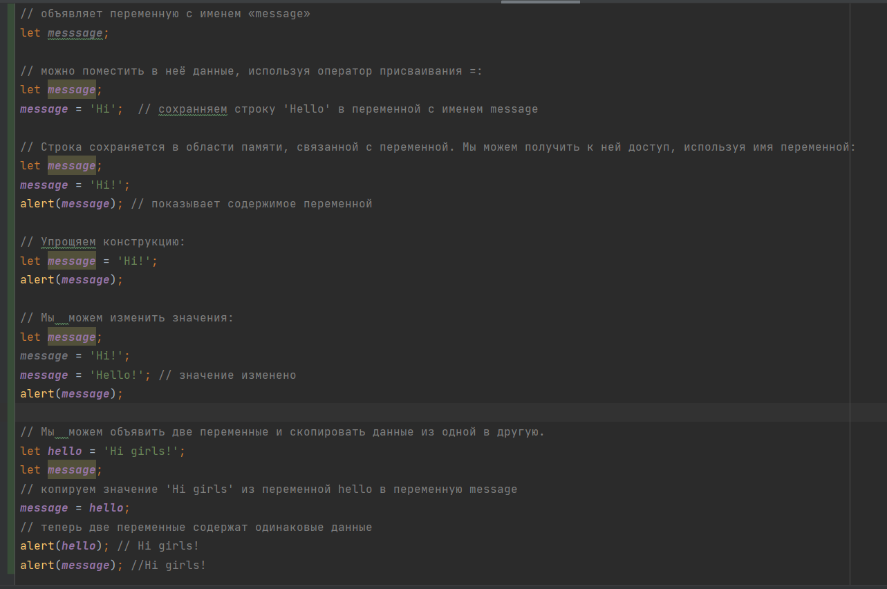

это «именованное хранилище» для данных. Мы можем использовать переменные для хранения товаров, посетителей и других данных. Для создания переменной в JavaScript используйте ключевое слово let.

В JavaScript есть два ограничения, касающиеся имён переменных:
Имя переменной должно содержать только буквы, цифры или символы $ и _.
Первый символ не должен быть цифрой.
Чтобы объявить константную, то есть, неизменяемую переменную, используйте const вместо let: